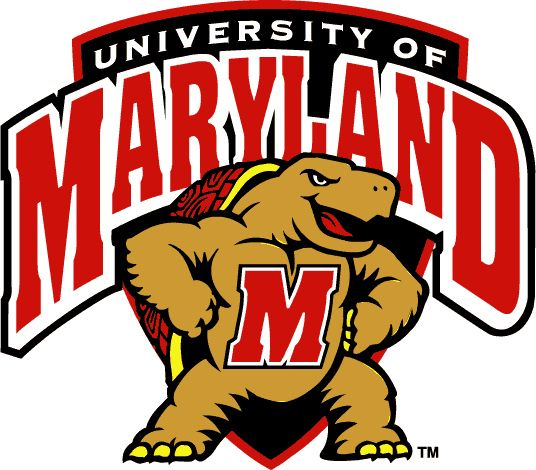
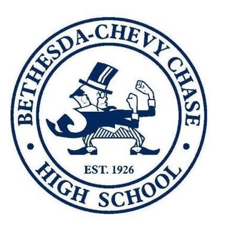

Contact Me!
I am a Montgomery County, MD-based student and journalist. I work multiple jobs across the DC area such as coaching swimming and basketball, managing a Country Club pool, and most recently, becoming an intern for The Nats Chat which covers the hometown Washington Nationals.
Intern for the Nats Chat, one of the top 20 most popular podcasts for the sport of baseball. Assist with the production of each episode as well as help with managing the social media feed.
Tutor DCPS and PGCPS students in 3rd through 12th grade in reading, english and math through a non-profit organization.
Coach high school students in weekly practices and games. 2019 County Champions, 2020 County Runner-ups.
Managed daily pool operations, responsible for weekly employee schedules, maintained safety of club patrons and guests, enforced COVID-19 guidelines.
Taught children ages 8-12 the basics of competitive swimming, coached in and out of the water, providing stroke instruction and managing practice sessions.
Philip Merrill College of Journalism, BA expected December 2023, Minor in Spanish Language, Culture & Professional Contexts

Bethesda-Chevy Chase High School Class of 2019
